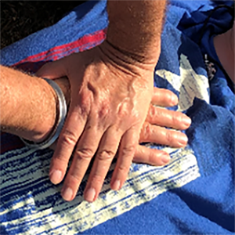

If someone suddenly collapses infront of you treat the situation like cardiac arrest. preform standar CPR for cases of suspected drowning, drug oferdose and collapses in children
CALL 911 if yet to do so
Position the victim on the floor on his or her back. Place the heel of one hand on the center of the chest (usually between the nipples) with the other hand on top. Compress forcefully 1.5 to 2 inches, at a rate of at least 100BPM (click the button for relevent song)

Lift your hands slightly with each push, allowing the chest to recoil. This helps blood to move around and draws in a little bit of air